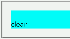
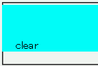

これら全ての要素を子に持つ要素で、左や上のマージンが無視されることがある。
※左フロートでは左マージンが、右フロートでは左マージンと上マージンが無視されます。
<div style="margin:1em; background:aqua;"> <div style="float:right; width:50%;">float</div> <div style="clear:right;">clear</div>
親のdiv要素のボックスの四方に幅1emのマージンが設置されるはずです。
Netscape7.1標準モード
WinIE6.0標準モード
以下のいずれかの方法を用いることで不具合を回避することができます。